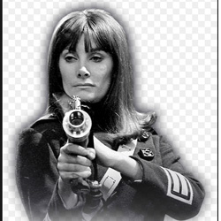

| Home | The Doctors | The Companions | The Villians |
|
|||
|
Sarah Kingdom Sara is a Space Security Agent, the sister of Bret Vyon, another agent who is aiding the Doctor in trying to defeat the Daleks. Told that Vyon is a traitor by Mavic Chen, the Guardian of the Solar System (who was in league with the Daleks) and ordered to kill whoever is working with him, she shoots her brother and is about to do the same to the Doctor and Steven when they are transportedacross space to the planet Mira. There she learns, to her horror and grief, that her unquestioning obedience has not only led her to unjustly kill her brother, but also that by doing so she has prevented Vyon from warning Earth of the Dalek plot. She then joins the Doctor in his fight, briefly travelling in the TARDIS to several different locations in space and time as the Doctor and Steven try to return the ship to Kembel for a final confrontation with Mavic Chen and the Daleks. When the Doctor activates the Time Destructor — a device that accelerates time — as part of his plan to stop the Daleks, he orders his companions back to the TARDIS for their protection. However, Sara follows him, not knowing the nature of his plan but concerned it might fail. As a result, she and the Doctor are both caught in the field of the Time Destructor as it rapidly ages everything around it. While the Doctor, being a Time Lord, can withstand the worst of the effects - merely becoming an even older man - Sara, being human, cannot. As Steven watches helplessly, Sara ages (and is portrayed as an old woman by May Warden) and dies, her remains aging to dust. Steven attempts to rescue his friends; he, too, is briefly affected and ages before he reverses the Time Destructor. This rejuvenates himself and the Doctor back to their previous ages but does not save Sara. Sara is by turns aggressive, independent and ruthless in her pursuit of what was right, a single-mindedness that blinded her to the larger implications of her orders. Meeting the Doctor changes that, and she turns her formidable skill and intellect to the defeat of the Daleks. |